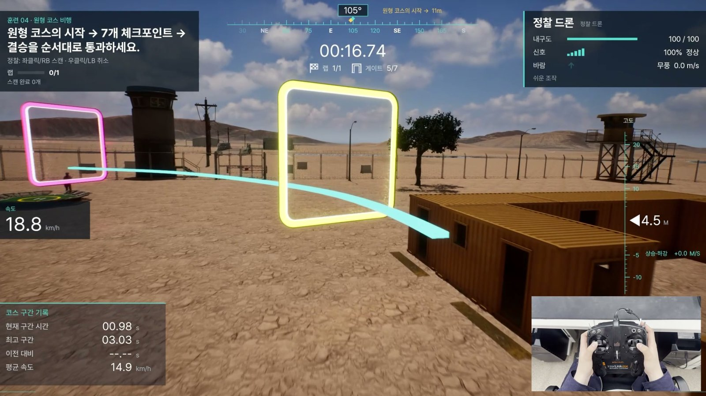

클릭하여 확대


드로너 (Droner)
드론 레이싱 · 미션 게임 · 캡스톤 졸업작품
Unreal Engine 5 · C++ · 블루프린트 · 2026
훈련, 게이트 레이스, 물자 투하와 전투 미션을 드론으로 수행하는 게임입니다. 기획·레벨·UI/UX·모델링 담당 팀원과 함께 만들었습니다.
비행 제어와 조작 보조, 미션 진행, 적 AI와 무기를 맡았습니다. 규칙은 C++로 구현하고 기체별 수치와 미션 조건은 Data Asset에서 조정하도록 나눴습니다. 키보드, 게임패드와 실제 RC 조종기를 지원합니다.
담당프로그래밍 · 시스템 · 테스트
C++비행·미션 시스템
RC실제 조종기 입력
Data Asset미션 데이터
Seed개인 확장 도시 생성


 ▶ 영상
▶ 영상 ▶ 영상
▶ 영상 ▶ 영상
▶ 영상